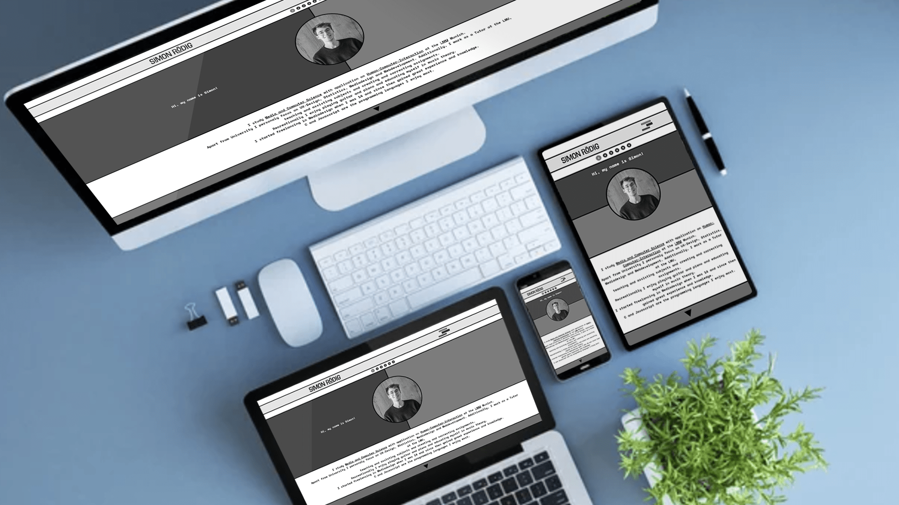
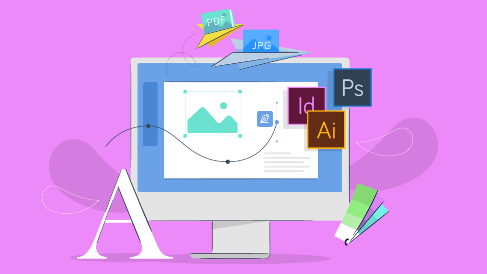
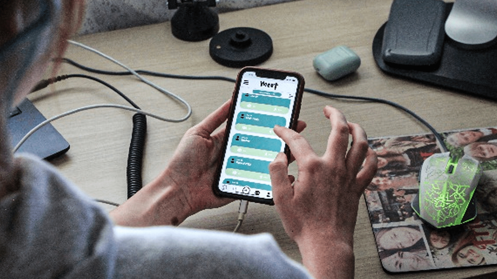
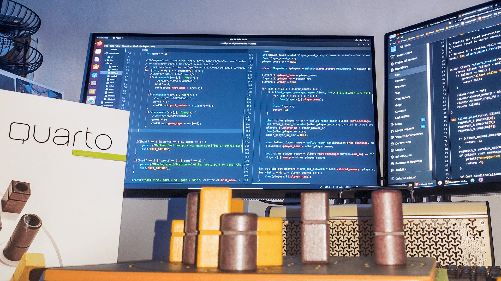
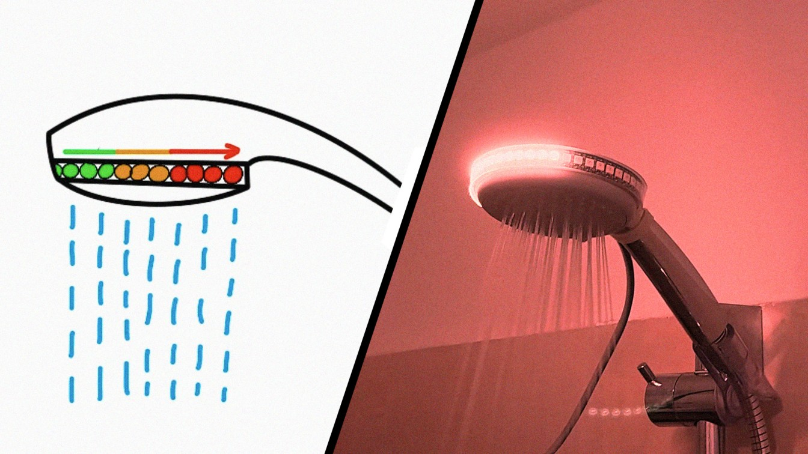
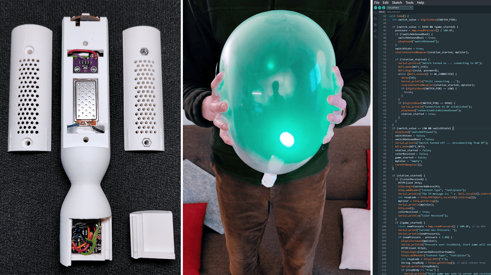
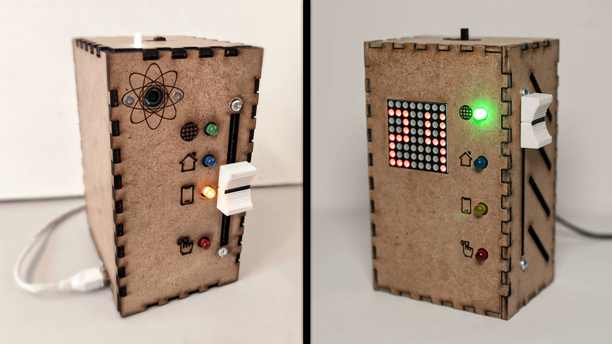

YearJS Simon Rödig - All rights reserved
Hi, my name is Simon!
I study Human-Computer-Interaction at the
LMU Munich.
I focus on UX/UI, usability, concept, and product engineering, physical and digital prototyping, as well as web development and design.
I would describe myself as a creative, curious, analytical, and detail-oriented developer and designer committed to
realizing the holistic development process, from ideation, concept creation, prototyping, user studies, to both frontend
and backend implementation, as well as testing and deployment. I combine the creative knowledge of a designer with the critical thinking
of a developer, enabling me to collaborate more effectively and bring concepts to life. Scroll down to explore my cards that represent my work and topics I'm interested in.
I Like to Design and Create Webpages- And Applications.
I started freelancing in video and graphic design when I was 14.
Mobile application prototype following a UCD process.
Some words
about my experience
as a tutor.
Client with "C" and web application with "JS".
My favourite recreational activity
is creating and
playing music.
Web Browser Extension:
Themes for university website.
Using practical research, analysis, ideation, and prototyping.
Interaction- and physical prototyping a balloon game.
Connectivity mode control on smart home devices.
My website is completely self-written in HTML, CSS, and quite some JavaScript.
It's influenced by the "Brutalism" design trend, embracing strong outlines, contrasting colors, and bold typography. With my design I tried to create something unique and frivol, opposing most modern web design trends. I started out by hand-sketching some ideas on my tablet, continued by creating a high fidelity prototype in AdobeXD, and eventually refined and coded my webpage.
I first got in touch with web development in my first semester at the LMU Munich. There I learned the initial basics of HTML, CSS, and JavaScript. I thoroughly enjoyed this field and designed and implemented some smaller projects early on (e.g.). Over time I gained a lot of advanced skills in this area and teaching and assisting the subject that comprises of web development one year later further deepend my knowledge which let me to effortlessly design and code responsive websites like the one you are on right now.
YearJS Simon Rödig - All rights reserved